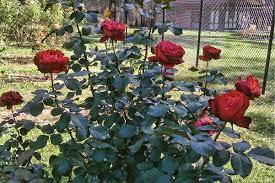

| Polyantha Rose | Introduced in the late 19th century. Plants are vigorous, many caned, & usually low growing to 3’ tall.
Small flowers in large sprays provide mass of color. Almost everblooming. Plant about 2’ apart.
Five common varieties are Margo Koster, The Fairy, China Doll, Cecile Brunner and Perle d’Or. |  |
Hybrid Tea Rose
| Most popular class of rose grown today; outsells all other types combined. Thousands of varieties
produced since 1867 introduction. Long blooming season. 3-7’ tall plants that should be planted 2-3’
apart.
|
Large flowers (3 ½ -5 ½ “) produced one to a stem and accented by handsome foliage. Popular varieties today include Mr. Lincoln, Peace, Touch of Class, Brandy, Double Delight, and 100s of others.  |
|
| Floribunda Rose | Cross between a polyantha and hybrid tea. Relatively short, plants are 2-3’ tall. Several floribundas planted 2’ apart make a good hedge. 2 ½ -3 ½“ flowers are borne in large clusters. Similar bloom shape to hybrid tea or somewhat flatter. Clusters are abundant and provide mass of color.
More color selections of floribunda are available than for polyanthas. Selections include Iceberg, Angel Face, Showbiz, Sun Flare, and Intrigue. |
.jpg) |